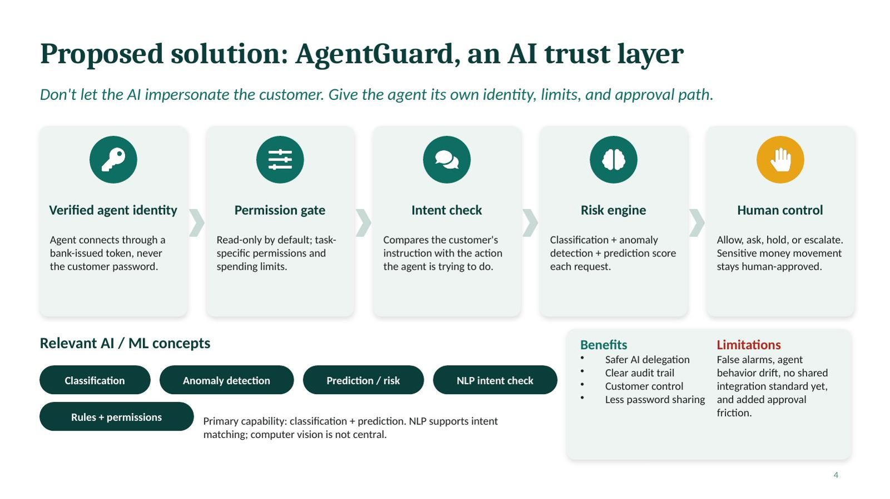
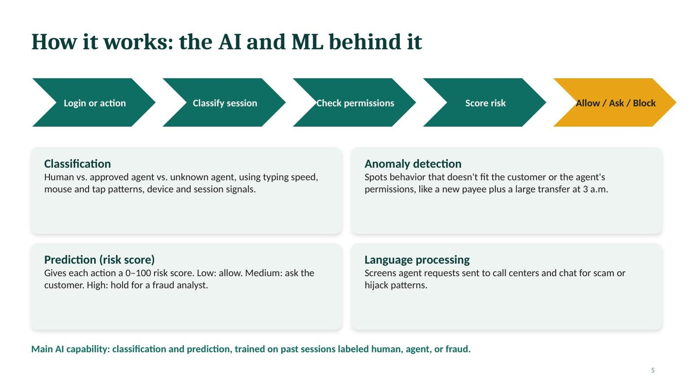
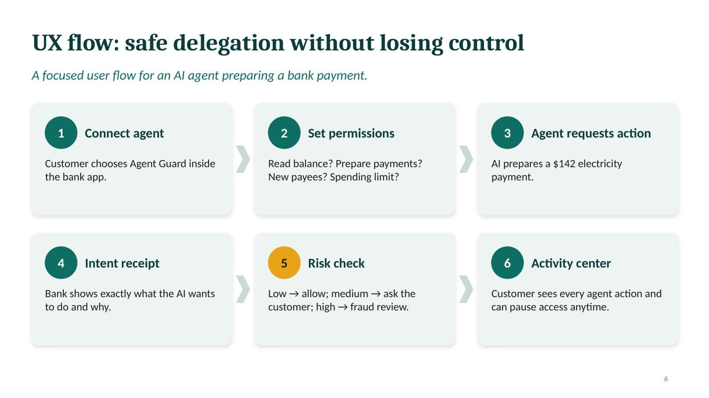
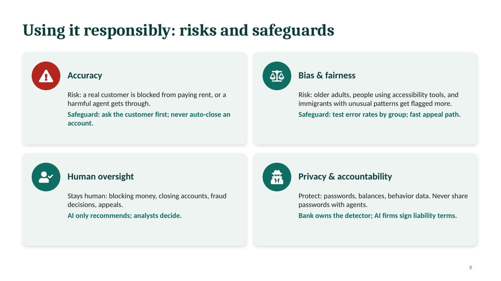
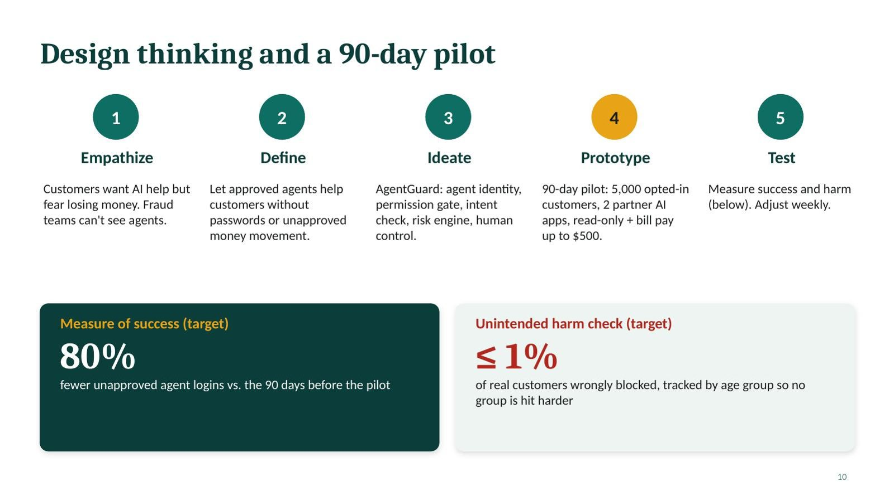

AgentGuard: Safe AI Agents in Banking
A team proposal for a real problem in the news: customers giving their bank passwords to AI assistants. AgentGuard lets people use AI helpers with their bank accounts without handing over full control.
Introduction
In October 2026, several large U.S. banks reported finding outside AI agents inside customer accounts, logged in with the customers' own usernames and passwords. Most were not hackers. Customers had shared their passwords with AI assistants to get help with everyday banking. AgentGuard is my team's proposal for solving this safely: instead of blocking AI helpers or letting them act as the customer, the bank gives each AI agent its own identity, limited permissions, and a human approval step for anything risky.
Description
When an AI agent logs in with a customer's password, the bank can't tell the agent from the real person, can't confirm what the customer approved, and can't stop the agent from moving money. AgentGuard adds an "AI trust layer" with five parts:
- Verified agent identity: agents connect with a bank-issued token, never a password.
- Permission gate: read-only by default, with task limits and spending limits.
- Intent check: compares what the customer asked for with what the agent is trying to do.
- Risk engine: machine learning scores each request from 0 to 100.
- Human control: low risk is allowed, medium risk asks the customer, high risk goes to a fraud analyst.
Objective
To apply AI and machine learning concepts to a current, real-world business problem, and to recommend a solution that is useful, safe, fair, and practical for a bank to test. The project also asked us to use generative AI responsibly, check its claims, and connect leadership and biblical principles to our design choices.
Process
I worked on this project with a team of five classmates, and together we turned a breaking news story into one clear recommendation. We followed the design thinking steps:
- EmpathizeCustomers want AI help but are afraid of losing money. Bank fraud teams can't see which logins are AI agents.
- DefineLet approved AI agents help customers without passwords and without unapproved money movement.
- IdeateWe compared options, including blocking all agents. We rejected that idea because it is simple but unfair to customers who rely on AI tools, and chose the AgentGuard trust layer.
- PrototypeWe designed a 90-day pilot: 5,000 volunteer customers, two partner AI apps, read-only access, and bill pay up to $500.
- TestWe set two targets: 80% fewer unapproved agent logins, and no more than 1% of real customers wrongly blocked, tracked by age group so no group is harmed more than others.
We used generative AI (Claude) to explore possible solutions, then checked every claim it made against news and government sources. All statistics came from the FTC and TD Bank, not from the AI.
Slides





Classmates' names and student ID numbers were removed from this portfolio copy of the presentation for privacy.
Tools and Technologies Used
- Machine learning concepts: classification, anomaly detection, risk prediction
- Natural language processing for checking agent requests
- Claude (Anthropic) for exploring solutions, with every claim fact-checked
- News and government sources (Axios, Decrypt, FTC, TD Bank, Brave)
- Design thinking: Empathize, Define, Ideate, Prototype, Test
- Microsoft PowerPoint
Value Proposition
This project shows that I can take a fast-moving problem from the news, understand the business and security risks, and turn AI and ML concepts into a practical plan a bank could actually test. It also shows I can work with a team to agree on one clear recommendation.
Unique Value
Many AI proposals focus only on what the technology can do. AgentGuard puts equal weight on what could go wrong: real customers wrongly blocked, older adults and people using accessibility tools being flagged more often, and unclear liability when an agent moves money. The plan keeps humans in charge of money and account decisions and includes a measurable "harm check," not just a success target.
Relevance
AI agents that act on people's behalf are spreading quickly, and banking is one of the first places where the risks are real. The same approach of separate agent identity, limited permissions, intent checks, risk scoring, and human approval can apply to healthcare portals, insurance, payroll, and any system where an AI might act for a person.
References
Brave. (2025, August). Agentic browser security: Indirect prompt injection in Perplexity Comet. https://brave.com/blog/comet-prompt-injection/
Decrypt. (2026, October 22). Major banks find rogue AI agents inside customer accounts, and they're 'horrified'. https://decrypt.co/381602/banks-rogue-ai-agents-inside-customer-accounts
Federal Trade Commission. (2026, March). FTC testifies before Joint Economic Committee on agency's efforts to combat fraud. https://www.ftc.gov/news-events/news/press-releases/2026/03/ftc-testifies-joint-economic-committee-agencys-efforts-combat-fraud
TD Bank. (2026, March 31). Nearly 80% of Americans use AI tools, but most still want humans making financial decisions, TD survey finds. https://stories.td.com/us/en/article/nearly-80-of-americans-use-ai-tools-but-most-still-want-humans-making-financial-decisions-td-survey-finds
The Holy Bible, New International Version. (2011). Biblica. (Original work published 1978)